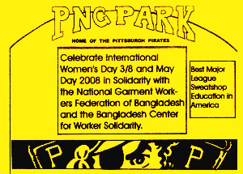

Disappointment and Tough Questions for the Pittsburgh Sports and Exhibition Authority
Submitted on Wed, 10/31/2007 - 1:24pm
For Immediate Release
October 31, 2007
Contact: Kenneth Miller 412-241-1339
Download files at www.iww.org
Thursday, November 1 10:30 AM - David L. Lawrence Convention Center, 3rd Floor
October 31, 2007
Contact: Kenneth Miller 412-241-1339
Download files at www.iww.org
Thursday, November 1 10:30 AM - David L. Lawrence Convention Center, 3rd Floor
The Thursday Sports and Exhibition Authority meeting has been rescheduled twice already. If you plan to attend, please call the SEA (412-393-0200) on Thursday morning to confirm the meeting time. You can ask to be included you on a list of people who are notified about meeting time changes.
The Pirates have refused to accept the most basic responsibility for factories sewing apparel with the Pirates logo and, with Major League Baseball, made bogus assertions about their own social responsibility. The SEA Executive Director Mary Conturo clearly understands this but has failed to adequately explain to the Board. John Chalovich said at the last meeting that he "does not think the Pirates are using sweatshops" and that he "wishes" all Pirates merchandise was made in the United States. The actionable item for the SEA is to invite the Workers Rights Consortium (WRC)to Pittsburgh and accept its testimony about factories sewing Pirates apparel. The WRC is the Human Rights organization founded with the help of United Students Against Sweatshops that conducts factory monitoring without financial support of the apparel industry.
Since the Pittsburgh Pirates have failed to engage in a forthright dialogue, The Pittsburgh Anti Sweatshop Community Alliance (PASCA) asked the City Controller to investigate ways that the team can be held accountable to Pittsburghers. Deputy Controller Pokora released an audit on October 21 that answered some of our questions. The most important aspect of the Controller's audit is that the City has NO checks and balances to ensure that the team is accountable to our shared concerns/values, like honesty and Human Rights. All SEA members should be reconsidering what they have done with this wholesale give away and work with groups like PASCA to demonstrate what can be done in the absence of accountability mechanisms built into the PNC Park lease arrangement. PASCA asks that the Controller's office follow up on the totality of our request. PGH_Controller_July_3_Sweatshops_Bucco.pdf
The Black Political Empowerment Project (B-PEP) requested the assistance of Board Chairperson John Chalovich in addressing the lack of minority participation/retention in the Building Trades. It is deplorable that the head an important City/County Board has failed to respond. PASCA co-founder Kenneth Miller wrote an information request to the State and Federal Departments of Labor aimed at getting the information needed for a meaningful discussion of equity of minorities and fair share of the state and federal construction subsidies to our region. PA_dol_oct21.pdf
###
With hospitals and universities making donations to the city of Pittsburgh, one official yesterday suggested passing the tip jar to another set of organizations that largely avoids the property tax: the sports teams.
Acting City Controller Tony Pokora released an audit finding that the Steelers, Penguins and Pirates play in sports palaces assessed at a total of $710 million -- a figure certain to grow with the construction of a new arena.
But because the venues are owned by the public Sports & Exhibition Authority, the city, Pittsburgh Public Schools and Allegheny County don't get a penny of property taxes from them, forgoing a total of $21 million a year.
"The public has to pick that portion up," Mr. Pokora said. "The taxpayers of the city and the county are being burdened."
Mayor Luke Ravenstahl, who would have to seek the team donations, batted the idea away.
"The reality is, they don't own the facilities," he said. "I don't know that [team payments are] something we need to focus on at this point."
But he concurred with Mr. Pokora's finding -- echoing the results of other audits -- that the city should rally many interests that don't pay the levy to pursue a statewide solution to the fiscal problems of municipalities that house large tax-exempt facilities.
The public ownership of stadiums and arenas that are largely controlled by sports teams is far from unique to Pittsburgh, said Paul Anderson, associate director of the National Sports Law Institute at Marquette University Law School.
"Teams don't own facilities. That's very normal," he said.
Different cities have different solutions to the questions of how and whether teams should help fill the public purse.
"Some pay no taxes. Some make payments in lieu of taxes," he said.
Locally, the teams pay payroll and gross revenue taxes. Their employees pay the $52-a-year municipal services tax to Pittsburgh, plus wage taxes if they live within the city limits. Fans pay the 5 percent amusement tax on ticket prices. Players for visiting teams even pitch in, via the Non-resident Sports Facilities Usage Fee, which brought in $2.37 million in 2006.
There's also the money that fans bring in and spend in parking lots, bars and restaurants, all of which are taxed.
Mr. Ravenstahl said the teams "provide a tremendous amount of economic impact to our region. ... There is a lot of economic benefit to what they do."
Mr. Pokora's audit, though, noted that the city's largest levy, bringing in $127 million a year, or 30 percent of revenue, is the property tax.
His audit found that a dozen sports and cultural organizations, led by the Sports & Exhibition Authority, Carnegie Institute, Pittsburgh Symphony and Pittsburgh Cultural Trust, own or operate in tax-exempt properties assessed at nearly $1.4 billion. If that property were taxable, it would bring $14.9 million a year to the city, $19.2 million to the school district and $6.5 million to the county, it found.
All of the city's tax-exempt groups combined control land assessed at $4.3 billion. Taxable land is assessed at $13.2 billion, and most of the balance of the $20.5 billion in property value in the city is government owned.
Since 2005, the city has received around $4.4 million a year from a consortium of universities, nonprofit health institutions and arts groups called the Pittsburgh Public Service Fund. Mr. Pokora recommended that the city ask the teams to join that effort.
The Penguins had no comment, and the Steelers and Pirates did not return calls yesterday.
Team payments, often including taxes, are governed by facility leases, said Mr. Anderson.
"Unless [the city] gave them something in return, I would be hard-pressed to see why the tenant would agree to reopen that," he said.
Mr. Pokora agreed that the city has no leverage to compel teams to make payments, just as it has nothing but public opinion and goodwill going for its push for a new agreement with the service fund. Ideally, all of those interests should come together to lobby the General Assembly to change the current system under which cities lose when tax-exempt facilities grow in size and value.
Connecticut, he noted, has a revenue sharing system under which the state pays municipalities that host big tax-exempt institutions.
"I think we all agree that we have to have a solution on nonprofit contributions," said Mr. Ravenstahl. "If it's revenue sharing, and that's what the state is willing to consider, then that's something we'd be willing to talk about."
He said the focus of city talks with the service fund has changed since 2005, when the donations started. He said he is trying to pare down the number of tax-exempt organizations that donate to the city, concentrating on the big education and health care institutions, rather than seeking dollars from the more than 100 groups that paid into the fund over the last two years.
"I have no intention in getting $100 from a local church or $100 from the Little Sisters of the Poor," he said.
First published on October 23, 2007 at 12:00 am
Rich Lord can be reached at rlord@post-gazette.com or 412-263-1542.